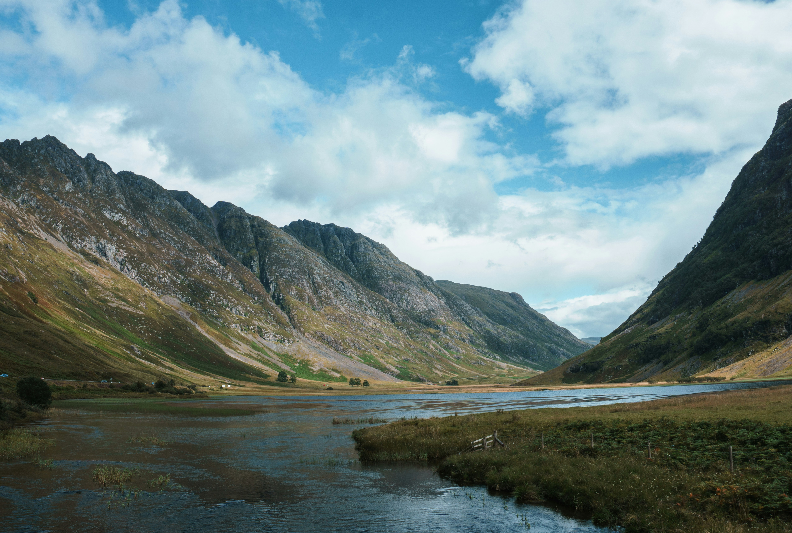
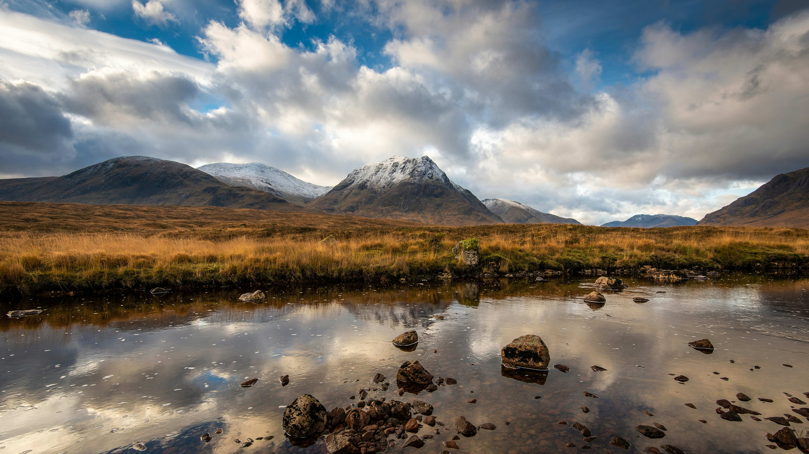
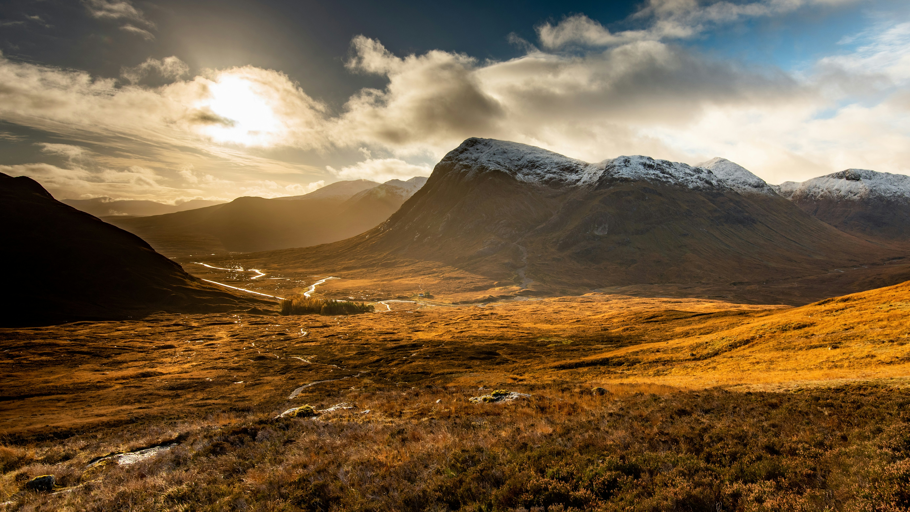

There is a moment, usually before you have properly entered the glen, when the road starts to rise and the landscape begins to change around you.
Not gradually. Suddenly.
The mountains do not appear in the distance and grow closer. They form around you. What was open moorland becomes a corridor of rock, and you realise you are no longer simply passing through a landscape — you are inside one.
On the coach, something changes. People who have been talking quietly tend to stop. Cameras that have been raised and lowered across fifty miles of Scottish countryside are set down. And for a few minutes, people simply stare out the windows.
That does not happen everywhere.

The Violence Underneath
Most people, looking up at the walls of Glencoe, assume they are looking at mountains that were pushed upward. That is how most landscapes work — tectonic forces building slowly over millions of years, ridgelines rising like the spine of something enormous.
Glencoe is the opposite. It is not a mountain range that rose. It is the remains of a supervolcano that collapsed.
Around 420 million years ago, a vast magma chamber beneath what is now Glencoe emptied catastrophically. The rock above it, with nothing left to support its own weight, fell inward. The landscape was not built — it was broken.
What followed only sharpened it further. Ice ages carved through the collapsed rock for millions of years, grinding and cutting the mountains into something that still feels strangely unfinished.
This is why Glencoe does not resemble much of the rest of Scotland. The Cairngorms feel ancient and rounded, softened by time. The Borders feel pastoral and settled. But Glencoe feels compressed. Fractured. Interrupted.
The mountains seem less like they emerged naturally and more like they survived something violent.
People sense this instinctively, even if they could not explain the geology afterwards. The details fade. The feeling tends not to.
What the Massacre Really Broke
History in Glencoe cannot be avoided, and most people who arrive know something about the massacre. What they usually know is the outline: February 1692, the MacDonalds, the Campbells, dawn.
What they often do not know is what made it something more than clan violence.
The Highlands operated under a code that most visitors today would recognise immediately, even if they have never heard it named. When you offered someone shelter — whether friend or enemy — they were under your protection until they left. You fed them, housed them, and in exchange they did not raise a hand against you. This was not sentiment. It was the foundation of Highland society, a world where clans lived in proximity and suspicion, and trust, when it was offered, carried real weight.
The Campbells, acting under government orders from Edinburgh and London, accepted hospitality from the MacDonalds of Glencoe for nearly two weeks. They ate at their tables. Slept under their roofs. And in the early hours of 13 February, they killed their hosts.
It was not just an atrocity. It was a calculated breach of something older than the law that ordered it.
What lingered was not simply the violence, but what it revealed: that a government was willing to use trust itself as a weapon.
In many ways, Glencoe became both a beginning and an ending. The old Highland world was already under pressure — from modernity, from the growing control of London over the Highlands. The massacre did not destroy that world alone, but it sent a signal that the rules the clans had lived by were no longer the rules that mattered.
Culloden would follow within decades. The Clearances after that. And by the nineteenth century, much of what had once defined the Highlands had either been dismantled, dispersed, or transformed into something safely romanticised.
Even visitors who know little of the history in detail often seem to feel some part of this. Not simply sadness at a tragedy, but the heavier feeling that a world ended here, and that its ending was deliberate.

The Fox Who Stayed
Most famous visitors to Glencoe were passing through — filmmakers, soldiers, tourists moving on to the next stop. Hamish MacInnes chose to stay.
Known in climbing circles as the Fox of Glencoe, MacInnes was one of the twentieth century's great mountaineers: a pioneer of Scottish winter climbing, the inventor of the modern all-metal ice axe, and the man who built Glencoe Mountain Rescue into one of the most respected teams in the world. He lived in the valley for most of his life, and understood it in the way that only long residence produces — not as something dramatic to be photographed, but as something to be read carefully and respected.
In his later years, he lost his memory.
There is something quietly fitting about the idea that a man shaped by a landscape so uncompromising — who pushed himself up its walls for decades — carried that same resilience into the part of his life where the mountains could no longer help him.
Glencoe tends to do that. It leaves something in the people who take it seriously.

Why Directors Keep Coming Back
It would be easy to explain Glencoe's film history as simply scenic. The landscape is spectacular; of course cameras keep finding it.
But that is not quite right.
Directors choose Glencoe — for Skyfall, for Highlander, for Outlaw King — not because it is beautiful, but because it already does the emotional work before a single frame is shot. The scale communicates isolation. The fractured rock communicates age. The atmosphere communicates danger, myth, survival, and something that is not easily named but is immediately felt.
The Harry Potter productions used the glen for Hagrid's Hut, the Forbidden Forest, and the sweeping outdoor shots of Hogwarts. And perhaps most unexpectedly, the Bridge of Death in Monty Python and the Holy Grail was filmed here too — which says something about Glencoe that no serious description quite captures. A landscape that can hold myth, spy thriller and absurdist comedy simultaneously, and make all three feel entirely plausible.
You can place almost any story there and the landscape carries it. The camera does not create the mood in Glencoe. It finds the mood that was already present.
There is no single moment I would point to and say: that is it.
It accumulates. The road rising. The mountains forming around you. The particular quality of the light, which is rarely generous and better for it. The mist that does not obscure the landscape so much as make it more itself.
And then the quiet on the coach.

That quiet is the thing I have noticed most consistently across different groups, seasons and weather. Glencoe asks something of people. It does not allow you to pass through it entirely unchanged.
Most places can be left behind fairly cleanly. You take the photograph, buy the postcard, and carry away the image more than the feeling.
Glencoe has a way of making the feeling follow you out.
← Back to From The Road